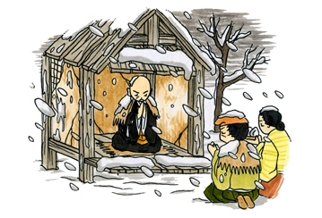

"When you polish a dusty mirror, it will surely shine like a jewel. Your immature and misguided mind is like a dusty mirror. When you polish your dusty mind, it will become a mirror reflecting the universal truth. Put your firm faith in the three treasures (Buddha, Dharma and Sangha) and let your mind shine day and night. How do you get it to shine? Just say, Namu Myoho Renge Kyo."
Issho Jobutsu Sho
Nichiren Shonin
Statue of Nichiren Shonin on the Altar of the Kannon Temple:
According to the engraved letters on the back of the statue, it says, “Engraved in the third year of Sho-ouh (1290) by Nichizo.” Nichizo was a Nichiren Shonin’s grand-disciple who was directly requested to expound the Lotus Sutra in Kyoto by Nichiren at his deathbed. Nichizo was only 13 years old at that time. Later he fulfilled his grand master’s sincere request. As a result almost the entire people of Kyoto practiced chanting the Odaimoku, even the emperor recognized Nichizo’s temple as an official temple of prayer for the emperor’s family.
Rev. Shokai Kanai took pictures of the statue and showed them to Professor Akiyama of Rissho University to find out its authenticity by showing the picture of the letters on the back of the statue. According to him, “It is hard to tell without looking at the real statue.” I thought the black statue is caused by smoke of incense for many centuries; however, Proffessor Akiyama said that it was custom painted black during a certain period of Japanese history.
We are not sure of the authenticity, but I still honor and adore the statue as it has a long history and respected by countless number of devotes.
Pictorial Life of Nichiren Shonin (this link will open in a new window)
The Lotus Sutra and Nichiren
Rev. Shokai Kanai
Nichiren and His Era
Many religions talk about salvation after one’s death such as going to heaven or to be born in the Buddha Land in the far, far west. On the other hand, Nichiren Buddhism teaches to create the Buddha Land on this earth while we are alive. Therefore, it is not necessary for us to seek heaven or the Pure Land beyond this world. Nichiren says, “The peace of our country will be realized if slanderers of the True Dharma are eliminated and keepers of the True Dharma are respected.” One’s happiness and peace of a nation depend on the people’s attitude toward righteousness. Nichiren, who lived during the Kamakura Era in the thirteenth century Japan, left many important messages for us today.
He gave us a simple remedy, “Namu Myoho Renge Kyo,” which means to embrace the teachings in the Lotus Sutra. This sacred title of the Lotus Sutra has been alive in countless people’s hearts for over 750 years.
What do the Lotus Sutra and Nichiren teach us? What kind of message can we receive in the 21st century? In order to find the answers, let us first review the life of Nichiren.
Japan was ruled by the Imperial Family since the beginning. Thirty years have passed since the Kamakura military faction took over the governing authority from the Emperor in Kyoto. Both sides continued to struggle for power. Peace and security were not established. Adding to the uncertainty, strange phenomena in the sky, epidemics, earthquakes, drought, wild fires and famine beset the country. Oxen and horses lie dead at crossroads and the streets were filled with skeletons. Many of the population have perished, and everyone suffered with grief.
The prevailing form of Buddhism practiced, functioned as a vehicle for praying for security of the nation at any number of elaborate temples and as scholastic education for the noble class, while the common people sought Buddhism for liberation from human sufferings. Priests exploited the common people’s fears with the emphasis that there was no salvation on this earth and to count only on Amitabha Buddha who will take you to the Pure Land in the far west after one’s death. This idea hastened many people to commit suicide so that they could find paradise.
During this tumultuous time, a boy was born to a family of a fisherman in Awa, Kominato (present Chiba Prefecture) located on the far eastern side of the main island of Japan where the sunrise hits first. It was February 16th, 1222 (note that Sakyamuni Buddha entered into nirvana on the 15th). He was named Zen-Nichi-Maro meaning “Righteous-Boy-like-the-Sun,” who later became Nichiren.
Since boyhood, Zen-Nichi-Maro enjoyed studying hard. At the age of 12 he entered Kiyosumi Temple, a center of study for reading and writing in his district. He ordained at 16 and received a Buddhist name, “Ren-cho,” or Lotus-in-Eternity. The young monk was full of ambition to study all Buddhist scriptures in order to find the causes of the natural calamities, draught, wild fires, and famine afflicting his nation. He read all the available materials in the library of the temple; however, this only added to his confusion. Which Buddhist scripture reveals the real truth of Sakyamuni Buddha’s essence? He entered the sanctuary of the temple’s guardian deity of wisdom, Kokuzo Bodhisattva, and prayed for blessing and guidance. He fasted and prayed to become the foremost man of wisdom and knowledge in Japan for three weeks.
After the introduction of Buddhism into Japan in 538 C.E., it flourished with the backing of the noble class and rich samurai warriors. They built many temples and pagodas, while the common people lived in agony, starvation, poverty and filled with suffering. Buddhist texts teach that when Buddhism is flourishing; the country is secure, peace prevails, and people are happy. Rencho’s main concern was, “why do people suffer so much even though Buddhism seemed to be flourishing in the first place?” “Why did so many different denominations exist among one Buddha Dharma?” “Why do they dispute each other?” “Which sutra is the real essence of Buddha’s enlightenment?”
To seek the answers, the clever young monk left Mt. Kiyosumi and traveled to Kamakura, Hiei, Kyoto, Nara, Mii, Koyasan and other places to study intensively all denominations and scriptures. He especially studied at Mt. Hiei, the center of Buddhist learning at that time for total of 13 years. As a result, Rencho reached the conclusion and conviction that only the Lotus Sutra reveals the True Dharma and profound enlightenment of Sakyamuni Buddha. All Buddhists in Japan at that time considered the Lotus Sutra too hard to be understood and difficult to realize its true teachings.
The Teachings of the Lotus Sutra
Returning to Kiyosumi Temple, he chanted for the first time, the sacred title of the sutra, “NAMU MYOHO RENGE KYO,” as he faced the rising sun over the horizon of the Pacific Ocean from a peak on Mt. Kiyosumi. To affirm his conviction, he changed his name to NICHI-REN, “Sun-Lotus.” It was April 28, 1253. This is the birthday for Nichiren Buddhism. “Just as the light of the SUN and the moon eliminates all darkness, he will be able to eliminate the darkness of the living beings,” as stated in Chapter 21 of the Lotus Sutra. And “They are not defiled by worldliness just as the LOTUS is not defiled by water,” as stated in Chapter 15 of the Lotus Sutra. The teachings of the sutra represented the sun and the lotus, so as Nichiren wished to be like the sun and the lotus to keep pure and brighten the minds of all living beings.
There, he made three great vows; “I shall be the pillar of Japan, I shall be the eyes of Japan, and I shall be a large vessel of Japan.” These vows were his firm affirmation, which he lived with his entire life.
What does the Lotus Sutra teaches to make him have such a strong affirmation? First we have to know who Sakyamuni Buddha was and his teachings. Roughly 2,500 years ago Sakyamuni left the palace of the Sakya Clan, sat under a bodhi tree not far from the City of Gaya and attained Enlightenment and became the Buddha. However, the Lotus Sutra states, “To tell the truth, it is many hundreds of thousands of billions of nayutas of kalpas since I became the Buddha.” The Buddha transcends the time and place. He exists eternally from the time immemorial to the distant future, appearing at any time and any place; therefore, he is able to watch us and protect us at any place and any time with his compassion. He is always with us. Thus, he is called the Eternal Buddha.
Another outstanding teaching of the Lotus Sutra is that everyone can be saved. How are we saved from all sufferings and troubles? Most sutras before the Lotus Sutra revealed that we must quench all desires to become Buddhas or that those who seek salvation only for themselves cannot become Buddhas. However, the Lotus Sutra reveals that anyone; the good and the bad, will be saved and become Buddhas. Then some people may say that it is not fair that even evil people are saved. However, the evil can be changed to good, once he repents his wrong conducts and practices the teachings of the Lotus Sutra.
All of us have some sort of anxiety, annoyance, or sufferings. People often say, “Why am I the only one to suffer?” and blame others and society. But the Buddha teaches us our sufferings and worries are created by each individual. The causes of suffering are the Three Poisons (greediness, anger, and ignorance to the Universal Truth). The troubles in a family, society and between countries are caused by these Three Poisons. How can we eliminate the poisons? The Buddha says the wisdom to see things as they are and compassion toward everything around us will bring forth liberation from all sufferings and troubles. We have always had the minds of compassion and wisdom and to live together in harmony; therefore, we just need brush them up. “Have wisdom and be nice to others!” It is easy to say that, but hard to practice. The sutra states that we will be saved when we take the remedy of essence of the Lotus Sutra that is “Namu Myoho Renge Kyo.” We will be protected by the Eternal Buddha.
Thus, the Lotus Sutra emphasizes the existence of the Eternal Buddha and potentiality for everyone to become a Buddha.
Establishment of Righteousness and Security of the Nation
Now we turn our attention back to Nichiren, who entrusted his entire life and devotion to the Lotus Sutra. The 13th century was the beginning of mappo or the Declining Latter Age of Dharma (2,000 years after Sakyamuni Buddha’s death). This is the period when doctrine alone is still alive, but there is neither practice nor enlightenment. It is also the time for righteousness and true teachings to be revealed again. Nichiren sought how to save all these suffering people. The Lotus Sutra is hard for people to believe and hard to practice. We live in the era of mappo of which is said there is no salvation. The answer is to spread the teachings of the Lotus Sutra and the simple method of chanting the Sacred Title or Odaimoku, “Namu Myoho Renge Kyo.” The Odaimoku is the remedy for us to cure the blindness to the truth. It contains all the merits of the Eternal Buddha; therefore, if you take this remedy, you will receive Buddha’s wisdom and compassion, thus you will be liberated from sufferings and troubles.
Nichiren had strong determination to spread the sutra and led people to chant the Odaimoku. His first sermon was at Kiyosumi Temple at noon on April 28, 1253. However no one had ears to listen to him, instead he was almost beheaded by a local police chief who had strong faith in the Pure Land Sect. Then Nichiren traveled to the city of Kamakura, the political capital of Japan.
There were many huge temples of different denominations and many famous priests, who held on to their positions in the Kamakura government since the government built these temples for the priests to pray for the security of Japan. The original task of Buddhism to save the suffering people was forgotten. Because of the many natural disasters, diseases and starvation, the common people gave up life on this earth and looked for rebirth in the Pure Land. In the midst of all these calamities and corrupt ideas, Nichiren stood on corner in Kamakura and preached that we can be saved while we are alive and expounded the teachings of the Lotus Sutra.
In order to be saved while we are still alive, we must change the government. For Nichiren, these constant disasters were an indication that something was not done right. Unless something was done to end the present calamities and to avert similar disasters in the future, the suffering of the people would continue. He researched all Buddhist doctrines to find the solution to save the county. Finally the quest for peace was set down clearly in Rissho Ankoku Ron.
Nichiren presented this petition to the Kamakura Government. It states, “The government and the people are standing against the Right Law. They believe wrong teachings. Therefore, gods have deserted this country and saints who protect the people have left us.” He continues, “The peace of our country will be realized if slanderers of the Right Law are eliminated and keepers of the Right law are respected.” According to Nichiren the slanderers of the Right Law are those priests who threw away the Lotus Sutra and emphasized on being born in the Pure Land and those priests who neglected the Lotus Sutra but prayed for security of Japan with other sutras which do not reveal righteousness. He made a prediction quoting from Medicine-Master Sutra, “Five of seven disasters predicted in the sutra have already taken place, leaving just two still to occur; foreign invasions and civil wars.” His petition concluded, “You should promptly discard your false faith and take up the true teaching of the Lotus Sutra at once. Then this triple world of the unenlightened will all become Buddha Land.”
Four Great Persecutions
Nichiren presented Rissho Ankoku Ron to Tokiyori Hojo, the most powerful person at that time. However the government authorities ignored his petition. Instead Nichiren’s hut was set on fire,
he was exiled to Izu Peninsula,
ambushed at Komatsu-bara Pine Forest

and almost beheaded at Tatsunokuchi Execution Ground.

Since Nichiren never backed away from these four major persecutions and because of his strong faith in the Lotus Sutra, people started to believe him and followed his practice of chanting, “Namu Myoho Renge Kyo.” The number of converts increased day by day. Realizing this trend, the authorities began to fear the impact of Nichiren and exiled him to Sado Island where only the worst criminals were sent.

He was placed in a small hut located in a cemetery with broken walls and roof in November, 1271. The government authorities wished him to die from coldness and starvation; however, he was again saved by Abutsu-bo who at first tried to kill him but quickly became his follower together with his wife. In every persecution some miracle happened to save his life. These protections are promised in the Lotus Sutra. When his hut in Kamakura was burned down, monkeys lead him to safety. When he was exiled to Izu Peninsula and abandoned in the middle of the ocean, a fisherman saved his life and sheltered him in a cave near the ocean shore. When he was just about to be executed, a miraculous ball of fire flew above the execution ground. All of these persecutions were predicted in the Lotus Sutra along with the protection by deities for true believers; therefore, as the persecutions increased, it only bolstered his belief in the sutra and that he was a Bodhisattva in the mappo era sent by Sakyamuni Buddha. Thus, he wrote many important treatises such as Kaimoku Sho, Kanjin Honzon Sho and also revealed the Mandala Gohonzon, the center of worship. This mandala symbolizes universal harmony between the Buddha Land and this world. It also depicts the rays of the Odaimoku that will save everyone.
Odaimoku Spread Around the World
While he was on Sado Island, the Kamakura government was in dreadful turmoil with civil war brewing amongst the Hojo clan and also an unprecedented foreign attack threat by the Mongolians, just as Nichiren predicted in Rissho Ankoku Ron. So the government needed Nichiren’s help now and called the exiled priest back to the political capital. This was a great chance for Nichiren to convince the government to follow the path to righteousness. But the authorities were only interested in when the Mongolian invasion would take place. He answered, “Within a year!” As predicted, seven months later in November, 1274, the Mongolians began to invade the islands of southwest Japan and Kyushu
Since this was his third petition and not accepted for a third time, Nichiren decided to stay away from Kamakura and went into the deep mountains of Minobu (present Yamanashi Prefecture).
There he dedicated to educate his disciples and followers. He wrote several important documents and sent hundreds of letters to his disciples and followers far away from Minobu. Many of these documents still exist today. His disciples and followers spread the Odaimoku and the teachings of the Lotus Sutra to their local people.
His major wish was that all people around the world chant “Namu Myoho Renge Kyo” in unison, then “The howling wind will not blow on the branches, falling rain will not erode the soil and the world will be peaceful.” You will see that such time will come when calamities cease to exist, people live long, men and their faith become eternal, there is no doubt about the tranquility of life.
The teachings of Sakyamuni Buddha traveled to the Far East and finally to Japan. His teachings were condensed in the sacred title of the Lotus Sutra, “Namu Myoho Renge Kyo.” He predicted the Odaimoku,a simple practice, will be brought back to India, where Buddhism started, and then it will spread to all corners of the world.